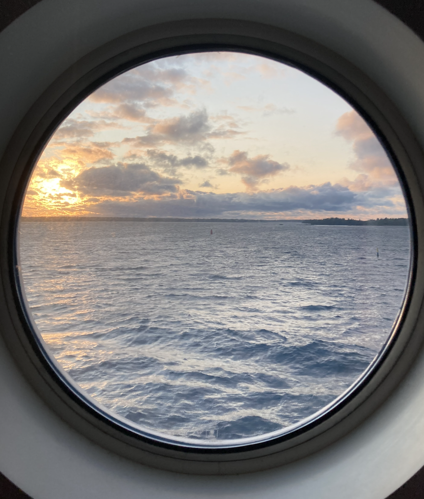
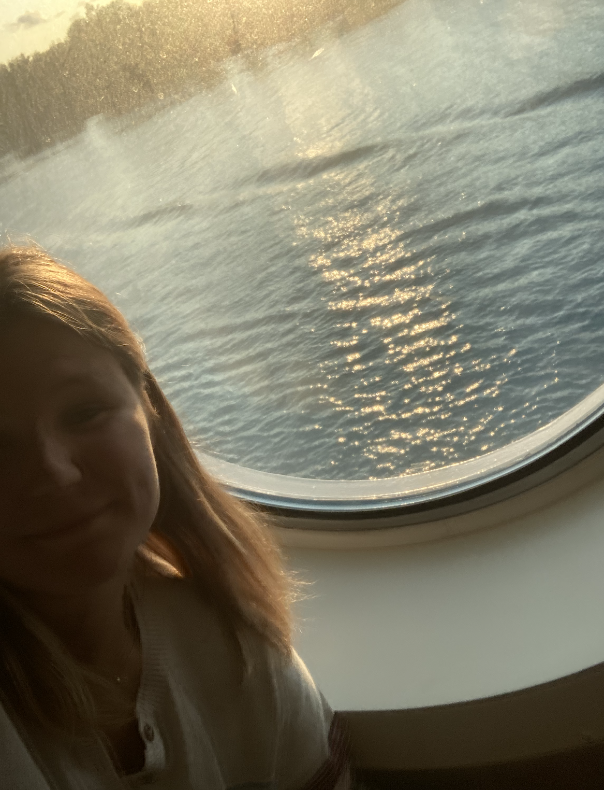

Exams over. I'm out in a lake somewhere, swimming across to explore islands.


Exams over. I'm out in a lake somewhere, swimming across to explore islands.
Exams over. I'm out in a lake somewhere, swimming across to explore islands.
The secret speedway to race through the width of London.
Central London is infamously dangerous for cyclists. In just the first seven months of 2022, 1,823 cyclists and pedestrians were killed or seriously injured. Source.
I live in West Kensington, near the western edge of Zone 2. Getting to Canary Wharf — one of the world’s major financial centres on the far eastern edge of central London — is rarely smooth.
Tube options? Awful. The underground tunnels become stifling ovens in summer. During peak hours, you’re pressed in so tightly it’s hard to breathe. You either leave home at 6am and hang around until 7pm to avoid the crush — or you suffer it.
Recently, I found an alternative: make the commute part of my training.
On Google Maps, the bike route looked long. But I set off anyway, thinking I’d follow it.
Soon after leaving home, I noticed something. Cyclists began appearing around me. Then more. Then dozens. Before I knew it, I was swept into a fast-moving river of bikes.
Some rode Boris Bikes in rolled-up shirt sleeves. Others were kitted out in full Lycra on carbon frames. Everyone was flowing east, together. A spontaneous, silent pack.
The blue-tarmac cycle lanes cut across the city like arteries. No cars. No pedestrians. Just pure, uninterrupted tarmac designed for speed.
Through tunnels and underpasses, curving with the Thames, the route became a secret expressway. At times it felt like we were in a stage of the Tour de France. The adrenaline is real. It's fast, it's focused, and it gives your brain a jolt of aliveness before 9am even hits.
By the time I arrived in Canary Wharf, I was not just on time — I was charged up. That kind of start changes your day entirely.
If you can find a way to turn commuting into something physical, you reclaim time. You arrive stronger than when you left. And that’s a win.
There are several interesting applications of ML and software dev to the development of mechanical systems that I'm excited to explore.
Competing internationally in the largest schools engineering competition.
At 15, I founded my schools first team, and took it global.
F1 in Schools is the world's largest STEM competition for school students. But back in 2020, in Scotland, it was almost completely unknown. Only one school competed regularly, and in Edinburgh — where I studied — barely anyone had heard of it.
I was lucky. I was studying engineering in school, and when I stumbled across the competition, I realised something: this wasn't just about fast cars. It was about building something real. A brand. A team. A vision.
I founded a team with no clue what I was getting into. Just naive optimism and determination. I called the team Fibonacci — inspired by the golden ratio and the idea that engineering, when done beautifully, follows nature's patterns.
We designed our own logo, created a brand from scratch, and pitched to local businesses for sponsorship. I learned to explain the value we could offer — social media exposure, youth engagement, links to STEM education. We raised thousands of pounds in funding.
Every pitch, every call, every awkward meeting with a headteacher or potential sponsor taught me how to sell a vision that didn't exist yet. And how to convince people to believe in it anyway.
We didn't just want to compete- we wanted to raise the bar. We built a professional pit display, practiced our verbal presentations endlessly, and iterated our car design until the last possible moment.
In the end, we didn't just build a fast car. We built a brand. We showed what Scottish teams could do.
And it worked. Today, Scotland has five times as many students competing in F1 in Schools as it did back then. Scottish teams have gone on to stand on the podium at international finals. I've had students message me years later saying Fibonacci inspired their team name, their branding, their drive.

Design & Engineering Folio

Enterprise & Branding Folio

Project Management Folio

Brand Guide

Partnership Proposal
It taught me how to lead. How to build. How to keep going when people say no. And how to create something that inspires others long after you've moved on.
That experience shaped how I think about engineering, startups, and the kind of world I want to help build. It taught me to take big swings — even if I didn't know what the outcome would be.
And most of all, it showed me the power of starting with an idea- and refusing to let it stay small.
So I started with what I actually knew.
So I started with what I actually knew: HTML and CSS.
Is it just me, or is AI sometimes... not that helpful?
I've been working on a simple landing page to showcase my engineering portfolio: something clean, to help me get freelance clients for mechanical engineering projects. So naturally, I thought: why not use AI?
Everyone talks about how easy it is now. I keep seeing posts about 3-year-olds (okay, maybe not literally) launching entire businesses with tools like Lovable, Cursor, or ChatGPT. Just type a prompt, and boom — site shipped, product launched, SaaS money rolling in.
I thought I could do the same.
Lovable generated a working site in seconds: it was kind of magical.
Until I opened the code.
Suddenly I was looking at pages of TypeScript, Vite config files, API handlers, edge functions... and I realized I had no idea what any of it actually did. Trying to customize it was like trying to read a book in a language I didn't speak. Every time I changed one thing, something else broke.
So I spent hours trying to understand what AI had made for me — instead of actually building something I understood.
AI wasn't helping. It was hiding the learning I needed to do.
So I gave up.
Not on the site — but on the AI.
I opened a blank .html file and .css file and started from scratch.
No React. No frameworks. No backend. No AI.
Just the stuff I actually knew. Headings. Buttons. Margins. Flexbox. I slowly built a static portfolio site by hand — understanding every single line of code along the way.
And you know what?
It wasn't impressive. It wasn't "AI startup founder in San Francisco" energy. But it was mine. And it worked.
It wasn't fast, but it was real progress.
The irony?
Everyone says AI is a productivity tool. But for me, it became a distraction — because I was trying to speed through skills I hadn't built yet.
There's nothing wrong with using AI. But if you don't understand the foundations — if you're still learning how websites work — it won't feel like a shortcut. It'll feel like a wall.
Sometimes, the slow path is the shortcut.
What do you build when everything is already being built?
So we have this gold rush AI situation.
My LinkedIn is full of posts about million-dollar ARR (that's annual recurring revenue) and acquisitions that mean life-changing capital and fresh runway. It's incredible. It's an amazing time to be alive, and an even better time to be an engineer. A fantastic time to be learning.
A few years ago, I started doing deep dives to understand the economics of how the world moves. I did one on AI. It's wild.
NVIDIA has the monopoly. They make the silicon chips (GPUs originally built for gaming) that are now the backbone of running AI computations. Then came ChatGPT. OpenAI trained a massive weighted math model called a large language model. You feed it data, and out come averaged results that sound like intelligent responses. A huge part of OpenAI is owned by Microsoft.
Right now, software developers are riding this wave by building what people call GPT wrappers. These are apps or tools that use AI like ChatGPT behind the scenes. The wrapper is usually just a nice user interface and some smart API calls. The AI does the heavy lifting, and the site gives it structure and context — that's what prompting is: giving the AI a setup so it frames its answer in a useful way.
But if anything happens to NVIDIA, Microsoft, or OpenAI, the whole thing breaks. The wrappers don't control the core tech.
Could OpenAI replace all the wrappers with its own interfaces? Yes. And sometimes it does. But it also relies on wrappers to distribute and popularize its tools.
So here's the dilemma: the wrappers don't really own anything. So what should you build? Hardware? Infrastructure? Your own models?
As an engineer, that's the question I keep turning over. It's never been easier to build fast. But the challenge now is building things that truly matter. That people want. That you actually own.
What to do? Keep going...
"Tutorial Hell" is infamous for non-stop learning, without the actual doing.
As an engineer, I've always been biased to action.
To do the thing. Not just research and plan. Sometimes to a fault- where I've gone and prototyped the thing when a bit of pre-reading would have actually been useful.
But with building web apps, so many tech stacks exist. And my current progress: giving my best shot and building prototypes of every idea. It's not scaleable.
So in interest in achieving my larger goals, I'm honing in and focussing on learning one tech stack.
Within a strict timeline (so there will be light at the end of the tutorials), I'm focussing on studying and building my knowledge.
In parrallel, I'll be building at my 9-5 internship, and with my consultancy. But for my free time, it's a pause on building. Just decking out the knowledge.
P.S, if you're curious: In February I got the "Responsive Web Page" Certification from the FreeCodeCamp.com course, for full stack I'm going to learn using Scrimba.com
Making magic look like magic
Making things look beautiful, is a fundamental skill.
Essential to showcasing engineering, and your work. I've dived into the creative world of making sites look lovely.
Trying first cursor (AI can't replace our heart and soul), and lovable. Then left the AI no code tools for figma. But favouring the website focus, I found Framer.
Wow it's fun!